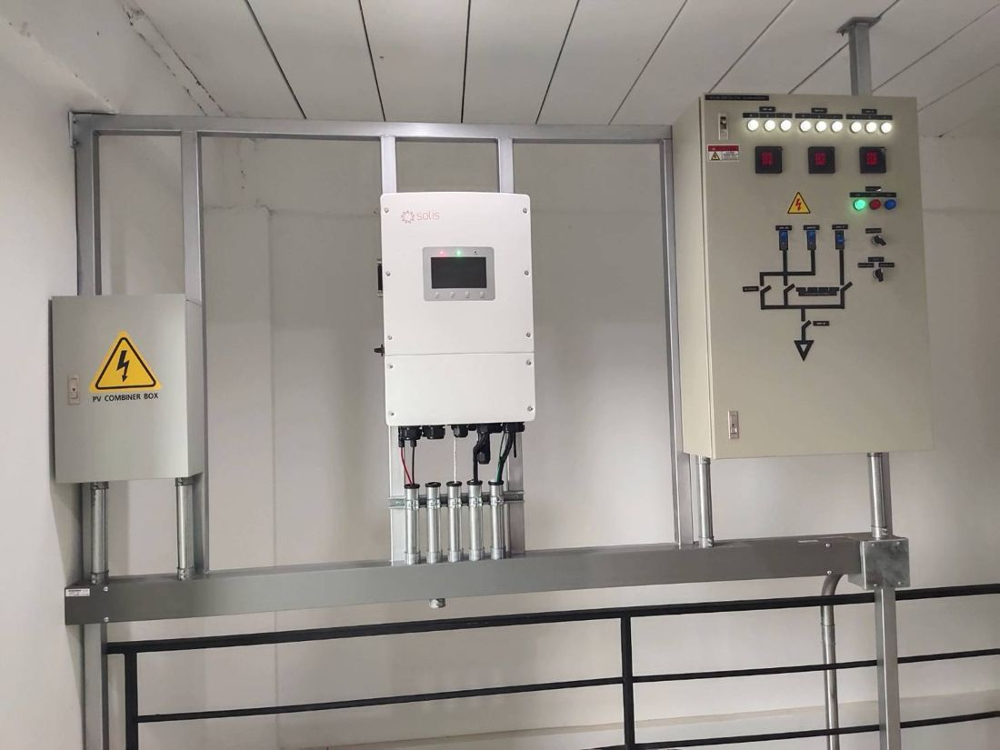

![Solar ESS, Solar Energy for Sustainable Solution]()

งานรายโครงการ · จ่ายเป็นรายงาน
งานเดินสายไฟ: สาย 3 เฟส 25 ตร.มม. + ATS
ตัวเมืองหาดใหญ่, สงขลา
25 mm²สาย 3 เฟส
~20 mระยะเดินสาย
1½" IMCท่อร้อยสาย
งานไฟฟ้ารายโครงการ ช่างไฟฟ้าที่มีใบอนุญาตจะได้รับการพิจารณาก่อน ส่งราคา วันที่เริ่มงานได้เร็วที่สุด และภาพผลงานที่คล้ายกัน
ขอบเขตงาน (6)
- เดินสาย 3 เฟส 25 ตร.มม. ระยะราว 20 ม. ในท่อ IMC 1½ นิ้ว เข้าตู้ MDB
- ติดตั้งและยึดท่อ IMC ข้อต่อ และตัวยึดให้แน่นหนา
- เข้าหัวสายและขันแรงบิดจุดต่อทั้งสองด้าน
- ต่อสาย เปิดใช้งาน และทดสอบ ATS (สลับไปและกลับ)
- ทดสอบความเป็นฉนวนและลำดับเฟส พร้อมบันทึกค่า
- ภาพก่อน ระหว่าง และหลังทำงาน พร้อมรายงานตามแบบฟอร์มของ Solar ESS (ดาวน์โหลดด้านล่าง)
แบบฟอร์มรายงาน: ดาวน์โหลดก่อนเสนอราคา กรอกที่หน้างาน (รายการอุปกรณ์ ผลทดสอบฉนวน ค่าแรงดันและกระแส) แล้วส่งกลับพร้อมภาพถ่าย